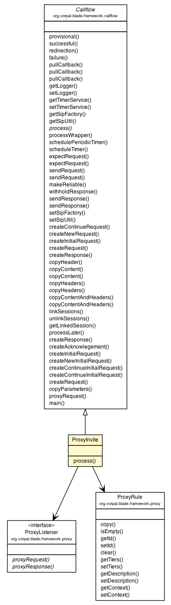

org.vorpal.blade.framework.callflow.Callflow
org.vorpal.blade.services.proxy.router.ProxyInvite
org.vorpal.blade.framework.callflow.Callflow
org.vorpal.blade.services.proxy.router.ProxyInvite
|
|||||||||
| PREV CLASS NEXT CLASS | FRAMES NO FRAMES | ||||||||
| SUMMARY: NESTED | FIELD | CONSTR | METHOD | DETAIL: FIELD | CONSTR | METHOD | ||||||||

java.lang.Object
public class ProxyInvite
| Field Summary |
|---|
| Fields inherited from class org.vorpal.blade.framework.callflow.Callflow |
|---|
ACK, BYE, CANCEL, Contact, DELAYED_REQUEST, INFO, INVITE, LINKED_SESSION, NOTIFY, OPTIONS, PRACK, PUBLISH, REFER, REGISTER, RELIABLE, REQUEST_CALLBACK_, RESPONSE_CALLBACK_, SIP, sipFactory, sipLogger, sipUtil, SUBSCRIBE, timerService, UPDATE, WITHHOLD_RESPONSE |
| Constructor Summary | |
|---|---|
ProxyInvite(org.vorpal.blade.framework.proxy.ProxyRule proxyRule)
|
|
ProxyInvite(org.vorpal.blade.framework.proxy.ProxyRule proxyRule,
org.vorpal.blade.framework.proxy.ProxyListener proxyListener)
|
|
| Method Summary | |
|---|---|
void |
process(javax.servlet.sip.SipServletRequest request)
|
| Methods inherited from class org.vorpal.blade.framework.callflow.Callflow |
|---|
copyContent, copyContent, copyContentAndHeaders, copyContentAndHeaders, copyHeader, copyHeaders, copyHeaders, copyParameters, createAcknowlegement, createContinueInitialRequest, createContinueInitialRequest, createContinueRequest, createInitialRequest, createInitialRequest, createNewInitialRequest, createNewRequest, createRequest, createRequest, createResponse, createResponse, expectRequest, expectRequest, failure, getLinkedSession, getLogger, getSipFactory, getSipUtil, getTimerService, linkSessions, main, makeReliable, processLater, processWrapper, provisional, proxyRequest, pullCallback, pullCallback, pullCallback, redirection, schedulePeriodicTimer, scheduleTimer, sendRequest, sendRequest, sendResponse, sendResponse, setLogger, setSipFactory, setSipUtil, setTimerService, successful, unlinkSessions, withholdResponse |
| Methods inherited from class java.lang.Object |
|---|
clone, equals, finalize, getClass, hashCode, notify, notifyAll, toString, wait, wait, wait |
| Constructor Detail |
|---|
public ProxyInvite(org.vorpal.blade.framework.proxy.ProxyRule proxyRule,
org.vorpal.blade.framework.proxy.ProxyListener proxyListener)
public ProxyInvite(org.vorpal.blade.framework.proxy.ProxyRule proxyRule)
| Method Detail |
|---|
public void process(javax.servlet.sip.SipServletRequest request)
throws javax.servlet.ServletException,
java.io.IOException
process in class org.vorpal.blade.framework.callflow.Callflowjavax.servlet.ServletException
java.io.IOException
|
|||||||||
| PREV CLASS NEXT CLASS | FRAMES NO FRAMES | ||||||||
| SUMMARY: NESTED | FIELD | CONSTR | METHOD | DETAIL: FIELD | CONSTR | METHOD | ||||||||